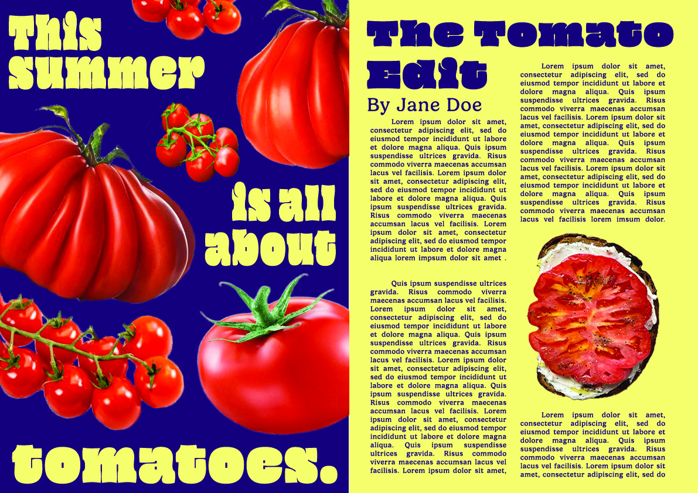

Chow Club
Created with Tiffany Lee
Tiffany and I designed Chow Club because we noticed that college students were struggling to feed themselves. We wanted to create a platform that not only taught you how to cook easy, healthy recipes, but it also encouraged you to consistently develop your cooking skills.
Conducted user research and user testing, built wireframes, developed high-fidelity prototype.
Atlanta Food Finder
Atlanta Food Finder is a web app that filters, sorts, and saves restaurants around Atlanta. You can rate, favorite, and review all the restaurants you've visited.
Worked with a team using Agile methodology, did backend development with Django, front-end HTML work, and front-end styling for the team website.
Learn More

Magazine Mockup Layout
Created using Adobe Photoshop and Illustrator